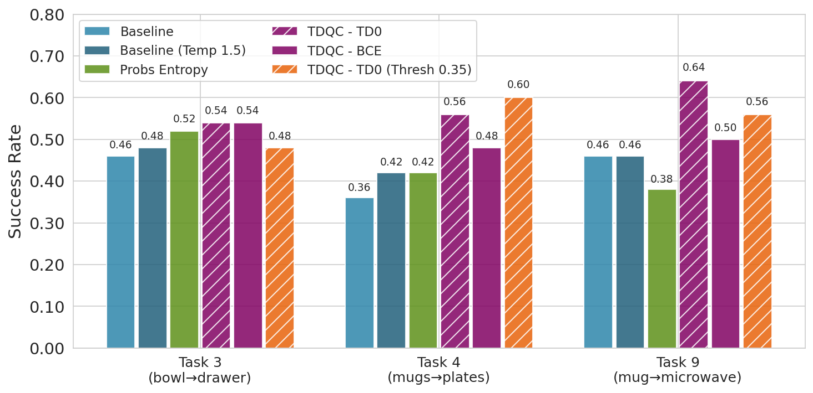
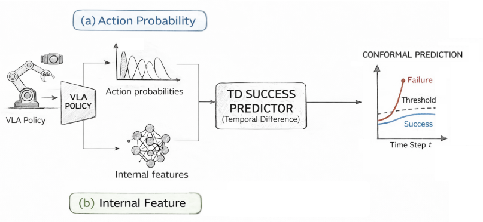

Abstract
Predicting whether a robot will successfully complete a manipulation task is crucial for safe and reliable deployment. Existing uncertainty calibration methods treat each time-step independently, ignoring the sequential structure of trajectories and producing poorly calibrated success predictions. We introduce Temporal-Difference Q-based Calibration (TDQC), a post-hoc calibration framework that applies Temporal Difference (TD) learning to train a lightweight probe on top of frozen Vision-Language-Action (VLA) models. By minimizing a sequential Brier score whose risk minimizer is the policy's value function, TDQC produces temporally consistent, well-calibrated success probabilities across an entire trajectory. Experiments on the LIBERO, WidowX, and Franka real-robot benchmarks show consistent improvements in Brier Score and ROC-AUC over cross-entropy baselines across multiple state-of-the-art VLA backbones (OpenVLA, UniVLA, π₀-FAST, and π₀).
1 Introduction
Vision-Language-Action (VLA) models have rapidly emerged as a powerful paradigm for generalist robot manipulation, combining the rich semantic understanding of large language models with sensorimotor control. Despite impressive task-completion rates, deploying these models in safety-critical settings requires knowing how confident the model is that the current trajectory will succeed — and that confidence must be calibrated.
Standard post-hoc calibration (e.g., Platt scaling, temperature scaling) was designed for i.i.d. classification. In robotics, however, observations arrive as a temporally correlated sequence and the outcome label — binary task success — is revealed only at the end. This creates two fundamental problems:
- Temporal inconsistency: independently calibrated per-step scores fluctuate wildly across a trajectory, giving unreliable early-warning signals.
- Label scarcity: only the final step carries a ground-truth label, making standard cross-entropy training extremely data-inefficient.
We address both problems with TDQC. Our key insight is that the Brier score, extended to sequential prediction, decomposes into a telescoping sum of TD-like squared errors. The global risk minimizer of this loss is exactly the state-value function \(V^\pi\), connecting calibration theory to reinforcement learning in a principled way. TDQC is:
Post-hoc & Lightweight
A small MLP or LSTM probe is trained on top of a frozen VLA backbone. No fine-tuning of the base model is required.
TDQC TD-Consistent
The loss propagates supervision from future steps backwards via Temporal Difference updates, leveraging every time-step as a training signal.
Model-Agnostic
Applied to OpenVLA, UniVLA, π₀-FAST, and π₀ without any architecture changes to the VLA itself.
2 Method
2.1 Problem Setting
Let \(h_t\) denote the history of observations and actions up to time \(t\) in a trajectory of length \(T\), and let \(y \in \{0,1\}\) denote final task success. We wish to learn a probe \(f_\theta : \mathcal{H} \to [0,1]\) such that \(f_\theta(h_t)\) is a calibrated estimate of \(\Pr[\text{success} \mid h_t]\) at every step.
2.2 Sequential Brier Score & the Value-Function Connection
The standard per-step Brier score \(\mathbb{E}[(f_\theta(h_t) - y)^2]\) ignores temporal structure. We instead minimize the sequential Brier score — the sum of squared prediction errors across all time-steps. Crucially, this loss telescopes:
Adding and subtracting consecutive predictions and completing the square yields a Temporal-Difference decomposition. The unique minimizer satisfies \(f_\theta(h_t) = \mathbb{E}[y \mid h_t]\), i.e., the policy's value function \(V^\pi(h_t)\). This motivates the TDQC training objective:
TDQC Loss — TD consistency terms (left) plus a terminal supervision term (right).
The middle terms enforce temporal consistency along the trajectory, while the terminal term anchors the final prediction to the ground-truth label. Only one label per trajectory is needed.
2.3 SAFE Probe Architecture
We parameterize \(f_\theta\) as the SAFE probe — a recurrent model that consumes the hidden states of the frozen VLA backbone at each step and outputs a success probability:
- SAFE-MLP (BCE): A shallow MLP applied independently at each step, trained with binary cross-entropy (ablation baseline).
- SAFE-MLP-TD0: The same MLP trained with the TDQC loss \(G(\theta)\), isolating the effect of the TD objective on a non-recurrent model.
- SAFE-LSTM: An LSTM that processes the full history \(h_t\), enabling temporally coherent predictions.
- SAFE-LSTM-TD0: The same LSTM trained with the full TDQC loss \(G(\theta)\) — our best-performing variant.
2.4 Training Procedure
Output: calibrated probe \(f_\theta\)
3 Experiments
3.1 Setup
We evaluate on two robot manipulation benchmarks:
- LIBERO — a suite of tabletop manipulation tasks in simulation, split into seen and unseen task distributions to test generalization.
- WidowX Real-Robot — tasks on a physical WidowX arm, evaluating real-world performance with OpenVLA.
- Franka Real-Robot — tasks on a physical Franka Emika arm with π₀-FAST, evaluating real-world robustness.
Across these benchmarks we probe four frozen VLA backbones: OpenVLA, UniVLA, π₀-FAST, and π₀. Calibration probes are trained only on trajectories from the seen split and evaluated on the held-out unseen split to measure out-of-distribution generalization. We report ROC-AUC (discrimination) and Brier Score (calibration quality, lower is better).
3.2 Benchmark Results
Brier Score ↓
| VLA Model | OpenVLA | OpenVLA | UniVLA | \(\pi_0\)-FAST | \(\pi_0\)-FAST | \(\pi_0\) | |||||||
|---|---|---|---|---|---|---|---|---|---|---|---|---|---|
| Benchmark | LIBERO | WidowX | LIBERO | LIBERO | Franka | LIBERO | |||||||
| Eval Task Split | Seen | Unseen | Seen | Unseen | Seen | Unseen | Seen | Unseen | Seen | Unseen | Seen | Unseen | |
| Static Baselines | Max prob. | 0.395 | 0.390 | 0.572 | 0.579 | 0.909 | 0.899 | 0.320 | 0.318 | 0.331 | 0.323 | — | — |
| Avg prob. | 0.348 | 0.364 | 0.275 | 0.282 | 0.529 | 0.532 | 0.212 | 0.218 | 0.290 | 0.294 | — | — | |
| Running Avg prob. | 0.338 | 0.356 | 0.255 | 0.257 | 0.543 | 0.544 | 0.244 | 0.238 | 0.359 | 0.361 | — | — | |
| Avg entropy | 0.306 | 0.313 | 0.414 | 0.426 | 0.406 | 0.391 | 0.209 | 0.222 | 0.281 | 0.281 | — | — | |
| Running Avg entropy | 0.265 | 0.273 | 0.435 | 0.432 | 0.343 | 0.330 | 0.279 | 0.264 | 0.341 | 0.339 | — | — | |
| Learned Baselines | SAFE-LSTM | 0.204 | 0.255 | 0.169 | 0.213 | 0.124 | 0.162 | 0.106 | 0.148 | 0.220 | 0.288 | 0.123 | 0.172 |
| SAFE-LSTM-TD0 (Ours) | 0.197 | 0.218 | 0.096 | 0.153 | 0.064 | 0.100 | 0.103 | 0.163 | 0.150 | 0.215 | 0.061 | 0.097 | |
| SAFE-MLP BCE | 0.192 | 0.231 | 0.127 | 0.164 | 0.091 | 0.158 | 0.103 | 0.162 | 0.206 | 0.248 | 0.075 | 0.137 | |
| SAFE-MLP-TD0 (Ours) | 0.195 | 0.229 | 0.130 | 0.169 | 0.066 | 0.131 | 0.109 | 0.150 | 0.210 | 0.229 | 0.068 | 0.128 | |
| TDQC | TDQC-BCE (Ours) | 0.199 | 0.206 | 0.301 | 0.344 | 0.138 | 0.152 | 0.122 | 0.158 | 0.237 | 0.243 | — | — |
| TDQC-TD0 (Ours) | 0.191 | 0.197 | 0.156 | 0.192 | 0.100 | 0.107 | 0.105 | 0.141 | 0.204 | 0.228 | — | — | |
Table 1 — Brier Score ↓. Results on simulation and real robot experiments, averaged over 21 seeds which determine different train-test splits of the tasks. “—” indicates that the Brier score cannot be calculated for the method. Red bold = best per column. TDQC achieves the lowest sequential Brier scores on all benchmarks except \(\pi_0\)-FAST LIBERO.
ROC-AUC ↑
| VLA Model | OpenVLA | OpenVLA | UniVLA | \(\pi_0\)-FAST | \(\pi_0\)-FAST | \(\pi_0\) | |||||||
|---|---|---|---|---|---|---|---|---|---|---|---|---|---|
| Benchmark | LIBERO | WidowX | LIBERO | LIBERO | Franka | LIBERO | |||||||
| Eval Task Split | Seen | Unseen | Seen | Unseen | Seen | Unseen | Seen | Unseen | Seen | Unseen | Seen | Unseen | |
| Static Baselines | Max prob. | 54.64 | 55.78 | 53.25 | 53.20 | 50.00 | 50.00 | 61.75 | 63.49 | 48.61 | 46.64 | — | — |
| Avg prob. | 47.08 | 48.09 | 47.47 | 48.30 | 42.96 | 40.25 | 47.36 | 48.09 | 49.45 | 48.03 | — | — | |
| Running Avg prob. | 49.19 | 47.72 | 49.20 | 46.37 | 43.05 | 40.29 | 53.95 | 55.68 | 52.95 | 49.98 | — | — | |
| Avg entropy | 46.81 | 46.75 | 50.19 | 49.36 | 41.34 | 47.36 | 45.42 | 46.30 | 49.28 | 49.07 | — | — | |
| Running Avg entropy | 50.48 | 48.09 | 46.16 | 43.99 | 51.63 | 56.71 | 53.78 | 55.44 | 51.12 | 48.78 | — | — | |
| Learned Baselines | SAFE-LSTM | 72.30 | 69.04 | 75.95 | 70.00 | 74.48 | 68.13 | 91.26 | 85.88 | 70.85 | 56.69 | 79.96 | 65.03 |
| SAFE-LSTM-TD0 (Ours) | 71.67 | 65.12 | 84.01 | 70.76 | 73.83 | 64.25 | 92.03 | 85.49 | 79.89 | 68.43 | 88.66 | 82.94 | |
| SAFE-MLP | 73.56 | 69.53 | 88.23 | 83.18 | 74.39 | 63.80 | 79.00 | 68.36 | 79.15 | 63.94 | 86.33 | 79.75 | |
| SAFE-MLP-BCE | 72.66 | 64.99 | 85.38 | 71.43 | 78.83 | 69.74 | 91.82 | 85.50 | 73.82 | 58.83 | 89.71 | 80.53 | |
| SAFE-MLP-TD0 (Ours) | 71.22 | 60.09 | 82.33 | 70.64 | 76.55 | 66.71 | 90.25 | 84.44 | 61.95 | 51.22 | 86.57 | 72.07 | |
| TDQC | TDQC BCE (Ours) | 72.70 | 72.28 | 69.69 | 67.09 | 63.44 | 54.37 | 87.67 | 82.53 | 59.32 | 53.26 | — | — |
| TDQC TD0 (Ours) | 74.20 | 72.72 | 78.90 | 72.97 | 72.30 | 70.17 | 87.51 | 83.39 | 64.19 | 57.37 | — | — | |
Table 2 — ROC-AUC ↑. Results on simulation and real robot experiments, averaged over 21 seeds. “—” indicates that the metric cannot be computed. Red bold = best per column. TDQC achieves SOTA results on all benchmarks except WidowX.
4 Figures
Key visualizations from the paper. Hover any card to highlight it.






5 Videos
Demonstration videos organised by content type. Click a tab to switch between Method explanations and Benchmark rollouts.
These LIBERO rollouts compare TDQC (SAFE-LSTM-TD0) against the SAFE-LSTM cross-entropy baseline on identical trajectories, illustrating the method's advantage.
Six real-robot clips comparing TDQC, SAFE-LSTM (cross-entropy), and IndepMLP on two tasks. On Task 4 only TDQC correctly predicts success; on Task 5 the IndepMLP produces a dangerous false positive.
Task 4 — Actual outcome: ✅ Success
Task 5 — Actual outcome: ❌ Failure
Citation
title={Temporal Difference Calibration in Sequential Tasks: Application to Vision-Language-Action Models},
author={Shelly Francis-Meretzki and Mirco Mutti and Yaniv Romano and Aviv Tamar},
booktitle={International Conference on Machine Learning (ICML)},
year={2026}
}